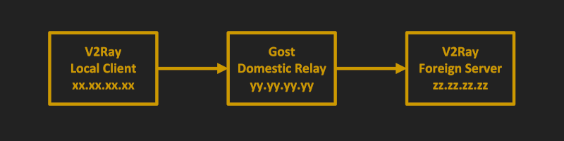

V2Ray Server with Domestic Relay
In this article, we forward traffic to a foreign V2Ray server via a domestic relay server. This configuration has two potential advantages:
- Speed
- Overcoming censorship
An example of speed would be China. Due to congestion, it can be more efficient to have a domestic relay in Shenzhen and a V2Ray server in Hong Kong.
An example of overcoming censorship would be Iran during the shutdown of November 2019. It was discovered you could still connect to the Internet if you used a relay in a domestic data center.
For the best ability to overcome censorship, we will implement the V2Ray server as V2Ray + WebSocket + TLS. The camouflage website on the same server will run on Nginx.
For the relay server, we will use a minimal configuration of Go Simple Tunnel (Gost).
In the examples in this article, we use these placeholders for IP addresses:
- Your local PC has IP address
xx.xx.xx.xx - The domestic relay has IP address
yy.yy.yy.yy - The foreign V2Ray server has hostname
zzz.yyyyy.xyzand IP addresszz.zz.zz.zz
We give instructions for both CentOS 8 and Debian 10 servers. Fedora and RHEL will be similar to CentOS 8, and Ubuntu and derivatives will be similar to Debian 10.
1. Prepare V2Ray Server
1.1. Obtain VPS and Domain Name
Obtain a VPS. In the rest of this article, we will write its IP address as zz.zz.zz.zz.
Obtain a domain name. We will give yyyyy.xyz as our example domain name, and zzz.yyyyy.xyz as our example host name for the V2Ray
server.
Create a DNS A record pointing from hostname zzz.yyyyy.xyz to the server IP address zz.zz.zz.zz.
1.2. Update Server
Update your server. On CentOS 8:
yum update -y
On Debian 10:
apt update && apt upgrade -y
1.3. Open Firewall
If you have implemented a firewall on your server, you must open port 80 and port 443. On CentOS 8:
firewall-cmd --permanent --zone=public --add-service=http
firewall-cmd --permanent --zone=public --add-service=https
firewall-cmd --reload
Debian 10:
nft add rule inet filter input tcp dport {http, https} counter accept
nft list ruleset > /etc/nftables.conf
1.4. Implement BBR TCP Congestion Control
Bottleneck Bandwidth and Round-trip propagation time (BBR) is a TCP congestion control algorithm developed at Google. Under certain types of congestion, it will improve your latency.
cat >> /etc/sysctl.d/50-bbr.conf <<EOF
net.core.default_qdisc=fq
net.ipv4.tcp_congestion_control=bbr
EOF
sysctl -p /etc/sysctl.d/50-bbr.conf
2. Install and Configure V2Ray on Server
2.1. Download and Install V2Ray
Download and run the V2Ray installation script. On CentOS 8:
yum install wget -y
wget https://raw.githubusercontent.com/v2fly/fhs-install-v2ray/master/install-release.sh
bash install-release.sh
One Debian 10:
apt install wget -y
wget https://raw.githubusercontent.com/v2fly/fhs-install-v2ray/master/install-release.sh
bash install-release.sh
The script ends its run with a messages such as V2Ray v4.27.0 is installed.
2.2. Configure V2Ray
Edit the V2Ray configuration file.
vi /usr/local/etc/v2ray/config.json
Insert the template below for V2Ray + WebSocket + TLS. The TLS part will be handled by Nginx, which we will set up in the next section.
- Replace
b5cdf5f5-7ef3-40a0-8c78-b66357f1a386by your choice for UUID. - Replace
64by your choice for alterId. - Replace
/secret12by your choice of secret path for V2Ray.
{
"log": {
"loglevel": "warning",
"access": "/var/log/v2ray/access.log",
"error": "/var/log/v2ray/error.log"
},
"inbounds": [{
"listen" : "127.0.0.1",
"port": 10000,
"protocol": "vmess",
"settings": {
"clients": [
{
"id": "b5cdf5f5-7ef3-40a0-8c78-b66357f1a386",
"level": 1,
"alterId": 64
}
]
},
"streamSettings": {
"network": "ws",
"wsSettings": {
"path": "/secret12"
}
}
}],
"outbounds": [{
"protocol": "freedom",
"settings": {}
},{
"protocol": "blackhole",
"settings": {},
"tag": "blocked"
}],
"routing": {
"rules": [
{
"type": "field",
"ip": ["geoip:private"],
"outboundTag": "blocked"
}
]
}
}
2.3. Start V2Ray
systemctl enable v2ray
systemctl start v2ray
2.4 Check V2Ray
Issue the command below:
systemctl status v2ray
It should show active (running).
ss -tulpn | grep v2ray
The above should show V2Ray listening on 127.0.0.1 port 10000.
journalctl -u v2ray
The above command shows the most recent messages from V2Ray. This could be useful if there are errors.
3. Install and Configure Nginx on V2Ray Server
3.1. Install Nginx
Install the Nginx web server. On CentOS:
yum install nginx -y
systemctl enable nginx
systemctl start nginx
On Debian or Ubuntu:
apt install nginx -y
3.2. Configure Nginx
On CentOS, edit /etc/nginx/nginx.conf. On Debian, edit /etc/nginx/sites-available/default.
Change the line server_name _; to your actual server name. For example:
server_name zzz.yyyyy.xyz;
Add a new location block. Replace /secret12 by your choice of secret path for V2Ray.
location /secret12 {
proxy_redirect off;
proxy_pass http://127.0.0.1:10000;
proxy_http_version 1.1;
proxy_set_header Upgrade $http_upgrade;
proxy_set_header Connection "upgrade";
proxy_set_header Host $http_host;
# Show real IP if you enable V2Ray access log
proxy_set_header X-Real-IP $remote_addr;
proxy_set_header X-Forwarded-For $proxy_add_x_forwarded_for;
}
After you have finished editing, save the file, then issue the command:
systemctl restart nginx
3.3. Enable Network Connect in SELinux
On CentOS only, due to SELinux, you must issue the following command to allow Nginx to make network connections:
setsebool -P httpd_can_network_connect 1
This does not apply to Debian, which typically does not use SELinux.
3.4. Add Web Content
Add some realistic website content so that even manual inspection will make your server look like a web server. You can search for sample web templates from the Internet. Here is one example. On CentOS:
yum install zip unzip -y
wget https://github.com/arcdetri/sample-blog/archive/master.zip
unzip master.zip
cp -rf sample-blog-master/html/* /usr/share/nginx/html/
On Debian or Ubuntu:
apt install zip unzip -y
wget https://github.com/arcdetri/sample-blog/archive/master.zip
unzip master.zip
sudo cp -rf sample-blog-master/html/* /var/www/html/
3.5. Check DNS Resolution
On your PC, issue the command:
nslookup zzz.yyyyy.xyz
This should resolve to your V2Ray server IP address, which we are giving as zz.zz.zz.zz in our examples. If it does not resolve yet, just wait until it
does resolve before you go any further.
You should also be able to open a browser, visit the HTTP version of your website, and see the sample content:
http://zzz.yyyyy.xyz
3.6. Get SSL Certificate
Add a free Let’s Encrypt SSL certificate to your site. For CentOS 8:
yum install epel-release -y
yum install certbot python3-certbot-nginx -y
certbot --nginx --register-unsafely-without-email
echo "0 0,12 * * * root python3 -c 'import random; import time; time.sleep(random.random() * 3600)' && certbot renew -q" | sudo tee -a /etc/crontab >
/dev/null
And for Debian 10:
apt install certbot python-certbot-nginx -y
certbot --nginx --register-unsafely-without-email
certbot renew --dry-run
Now you have a working web server with sample content and an SSL certificate.
3.7. Add HTTP/2
HTTP/2 can improve performance by decreasing latency.
Edit your configuration. On CentOS, edit /etc/nginx/nginx.conf. On Debian, edit /etc/nginx/sites-available/default. Add HTTP/2 to the
listen line(s), like this:
listen [::]:443 ssl http2 ipv6only=on; # managed by Certbot
listen 443 ssl http2; # managed by Certbot
Save the file. Test your configuration and restart Nginx:
nginx -t
systemctl restart nginx
3.8. Optionally Add CDN
Optionally position your server behind a Content Delivery Network by adding it to a CDN service such as Cloudflare.
3.9. Optionally Test Server Alone
Test what a casual visitor sees when they visit the HTTPS version of your website:
https://zzz.yyyyy.xyz
If your censorship situation allows it, and there is no risk of your V2Ray server being blocked, you can install a V2Ray client on your PC and test a direct connection from client to server, without the domestic relay which we will add next.
4. Install Gost on Relay Server
Now obtain a second VPS to serve as your domestic relay server. It must be in a domestic data center. We give yy.yy.yy.yy as its IP address. The relay
server does not necessarily need a DNS record.
We will use a simple configuration of Gost to forward requests from the domestic relay at yy.yy.yy.yy to the foreign V2Ray server at
zz.zz.zz.zz.
4.1. Update Server
In the same way as you did on your V2Ray server, update the existing software packages on your relay server. On CentOS 8:
yum update -y
On Debian 10:
apt update && apt upgrade -y
4.2. Open Firewall
If you implemented a firewall on the relay server, open port 443. On CentOS 8:
firewall-cmd --permanent --zone=public --add-service=https
firewall-cmd --reload
Debian 10:
nft add rule inet filter input tcp dport https counter accept
nft list ruleset > /etc/nftables.conf
4.3. Implement BBR TCP Congestion Control
As on the main server, implement BBR congestion control:
cat >> /etc/sysctl.d/50-bbr.conf <<EOF
net.core.default_qdisc=fq
net.ipv4.tcp_congestion_control=bbr
EOF
sysctl -p /etc/sysctl.d/50-bbr.conf
4.4. Download Gost
Install wget. On CentOS 8:
yum install wget gzip -y
On Debian 10:
apt install wget -y
Open a browser on your PC, and look on GitHub to see the latest version of Gost. We will use
the example of v2.11.1. Change this to the latest version at the time you follow this tutorial.
On your relay server, issue the commands:
wget https://github.com/ginuerzh/gost/releases/download/v2.11.1/gost-linux-amd64-2.11.1.gz
gunzip gost-linux-amd64-2.11.1.gz
mv gost-linux-amd64-2.11.1 /usr/local/bin/gost
chmod +x /usr/local/bin/gost
4.5. Create Systemd Service File
Edit the systemd service file for Gost:
vi /usr/lib/systemd/system/gost.service
Insert the contents below. Replace zz.zz.zz.zz in the sample contents by your actual V2Ray server IP address:
[Unit]
Description=GO Simple Tunnel
After=network.target
Wants=network.target
[Service]
Type=simple
ExecStart=/usr/local/bin/gost -L=tcp://:443/zz.zz.zz.zz:443
[Install]
WantedBy=multi-user.target
This says to forward TCP input on local (-L) port 443 to remote IP address zz.zz.zz.zz port 443.
Save the file.
4.6. Disable SELinux
This is only for CentOS. Running as is gives exit code 203. The easiest way to solve this is to edit the /etc/selinux/config file:
vi /etc/selinux/config
Set the line for SELinux status to disabled:
SELINUX=disabled
Save the file. Reboot the server:
reboot
4.7. Start Gost
Issue the commands:
systemctl enable gost
systemctl start gost
4.8. Check Gost
Issue the command:
systemctl status gost
It should show active (running).
ss -tulpn | grep gost
This should show Gost listening on port 443.
journalctl -u gost
The above command shows the most recent messages from Gost.
5. Install Client
The procedure for installing a V2Ray client is the same as in the post How to Install, Configure, and Run V2Ray + WebSocket + TLS + CDN. We will not repeat all the details here.
5.1. Download and Install V2Ray Client
We will just give the example of a Linux client, and even then only a brief overview. Assuming you want Linux, download the latest Linux client from GitHub. Unzip v2ray-linux-64.zip.
5.2. Configure Client
This the same as in the main post How to Install, Configure, and Run V2Ray + WebSocket + TLS + CDN, except that you must put the
relay server IP address (yy.yy.yy.yy in our example) in place of the V2Ray server IP address (zz.zz.zz.zz in our example).
Continuing our example for Linux, edit the V2Ray configuration file, config.json:
- Replace
yy.yy.yy.yyby your actual relay server IP address. - Replace
b5cdf5f5-7ef3-40a0-8c78-b66357f1a386by your choice for UUID. - Repalce
64by your choice for alterId. - Replace
/secret12by your choice of secret path for V2Ray. - Replace
zzz.yyyyy.xyzby your actual V2Ray server host name.
{
"inbounds": [
{
"port": 1080,
"listen": "127.0.0.1",
"protocol": "socks",
"sniffing": {
"enabled": true,
"destOverride": ["http", "tls"]
},
"settings": {
"auth": "noauth",
"udp": false
}
}
],
"outbounds": [
{
"protocol": "vmess",
"settings": {
"vnext": [
{
"address": "yy.yy.yy.yy",
"port": 443,
"users": [
{
"id": "b5cdf5f5-7ef3-40a0-8c78-b66357f1a386",
"alterId": 64
}
]
}
]
},
"streamSettings": {
"network": "ws",
"security": "tls",
"tlsSettings": {
"serverName": "zzz.yyyyy.xyz",
"allowInsecure": false
},
"wsSettings": {
"path": "/secret12",
"headers" : {
"host": "zzz.yyyyy.xyz"
}
}
}
}
]
}
5.3. Run Client
Continuing our example of a Linux client, you would change into the folder with the V2Ray binary in it and issue the command:
./v2ray -config=config.json
Then open Firefox. From the hamburger menu, select Preferences. In the Network Settings section, click Settings. Set the network settings as follows:
- Select Manual proxy configuration.
- Fill in
127.0.0.1in SOCKS Host. - Fill in
1080in the Port. - Select SOCKS v5.
- Check Proxy DNS when using SOCKS v5.
Firefox now sends requests to the local V2Ray client, which sends them to the domestic relay server, which forwards them to the foreign V2Ray server.
5.4. Check Client
In your browser, visit IP Chicken.
You should see the IP address of your foreign V2Ray server (zz.zz.zz.zz in our example), not the IP address of your PC
(xx.xx.xx.xx) or the domestic relay server (yy.yy.yy.yy).
6. Get Help and Report Issues
You can ask informal questions on social media sites such as Reddit. Raise formal issues in the Issues section of the appropriate repository on GitHub:
Updated 2020-08